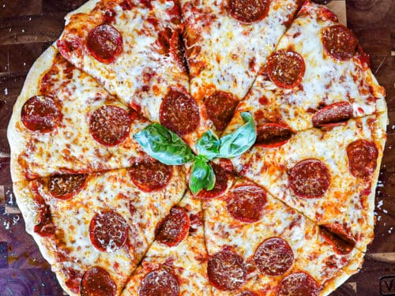

Pepperoni pizza

Description
Pizza is my favorite food on the planet. It can be made
for breakfast, lunch, dinner, or even dessert! It can be
as basic or as complex as you'd like. Today we will be
making my personal favorite kind of pizza: pepperoni.
Follow along as I take you through the steps of making
this delicious pizza.
Ingredients
- Pizza dough
- Flour
- Olive oil
- Pizza sauce
- Shredded mozzarella cheese
- Pepperoni
- Parmesean cheese
- Basil
Steps
- Preheat a pizza stone in the oven (on the center rack)
to 475°F or to the oven safe temperature as directed by
your pizza stone.
- Add half the flour to the center of a large cutting board
or flat surface, and spread it around to lightly dust the
surface with flour. Add the other half of the flour to the
corner of the cutting board to use as you stretch the dough.
- Stretch pizza dough by adding the raw pizza to the floured
surface. Flip it against the surface a few times to pick up
flour. Then start pinching outside 1” of the pizza dough, in
a circular motion, to outline the crust and start getting the
dough in a circle shape. Then alternate between pressing the
center of the dough against the cutting board, and using the
back of your knuckles to stretch the dough from underneath,
pulling it outwards in a circular motion. Dusting the pizza
dough along the way with the extra flour helps it retain a
larger size instead of shrinking back up to a ball. Use as
many different techniques as needed to stretch the dough.
- Carefully take the hot pizza stone out of the oven once it has
preheated, and quickly brush half of the olive oil on the top
of the pizza stone. Add the raw stretched pizza dough on top,
and brush the rest of the olive oil along the outside 1” of the
pizza crust (to give it a golden brown crust once baked).
- Work quickly to assemble pepperoni pizza toppings (to get it
back in the oven quickly). Add the pizza sauce and spread it
around the pizza, leaving 1” without sauce for the pizza crust
around the outside of the circle. Top with mozzarella cheese,
pepperoni slices, and half the parmesan cheese.
- Bake pepperoni pizza on pizza stone for 10-15 minutes at 475°F,
until cheese is melted and bubbling on the top, and the bottom
and crust has turned golden brown.
- Remove baked pepperoni pizza from the oven and top with fresh
parmesan cheese and fresh basil leaves as desired. Slice and
serve when cool enough to eat.